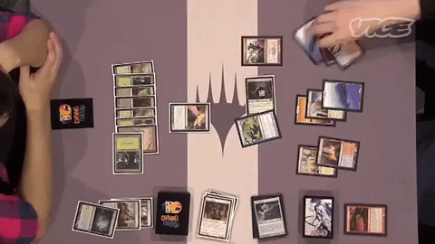

First published in 1993 by Wizards of the Coast, Magic was the first trading card game produced and it continues to thrive, with approximately twenty million players as of 2015.[1][2][3] Magic can be played by two or more
players in various formats, the most common of which uses a deck of 60+ cards, either in person with printed cards or through the Internet-based Magic: The Gathering Online, on a smartphone or tablet, or other
programs, using a deck of virtual cards.
Each game represents a battle between wizards known as "planeswalkers", who employ spells, artifacts, and creatures depicted on individual Magic cards to defeat their opponents. Although the original concept of the game
drew heavily from the motifs of traditional fantasy role-playing games such as Dungeons & Dragons, the gameplay of Magic bears little similarity to pencil-and-paper adventure games, while having substantially more cards
and more complex rules than many other card games. Each player starts the match with 20 life. To win, you must either bring your opponent to 0 life, or play a card that clearly states differnt condition to win the game by.
An organized tournament system and a community of professional Magic players has developed, as has a secondary market for Magic cards. Magic cards can be valuable due to their rarity and utility in gameplay. Often the prices
of a single card can be anywhere from a few cents to a few hundred dollars, and in some instances thousands of dollars. (taken from https://en.wikipedia.org/wiki/Magic:_The_Gathering)
